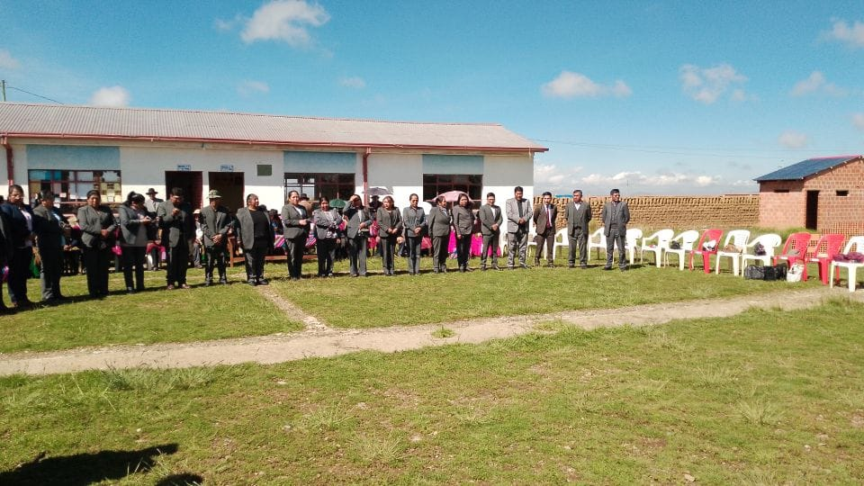
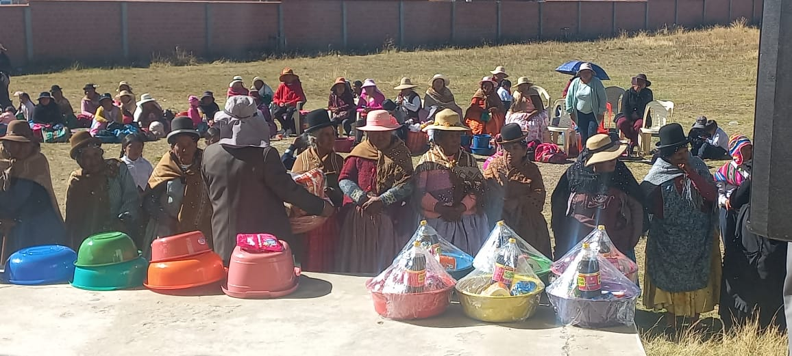
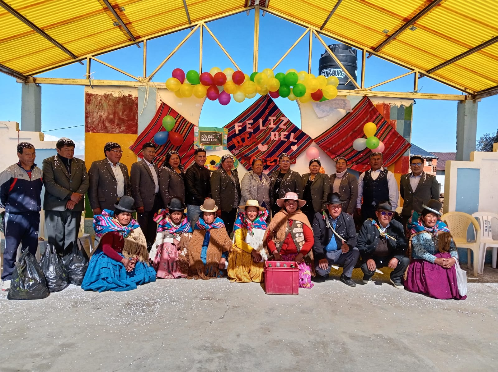
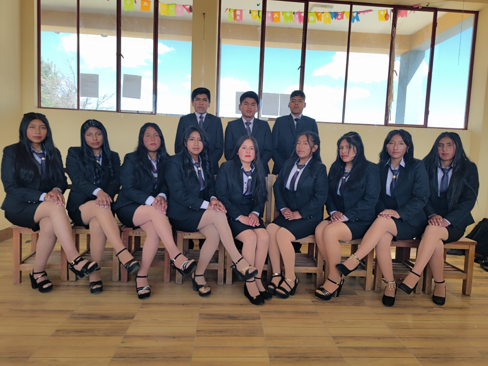
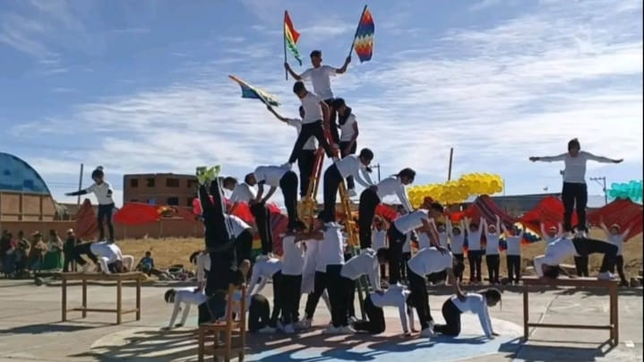
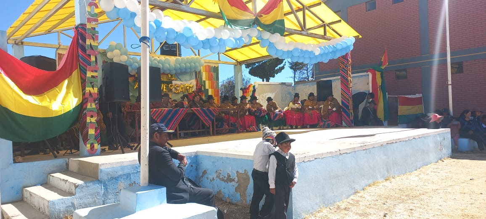
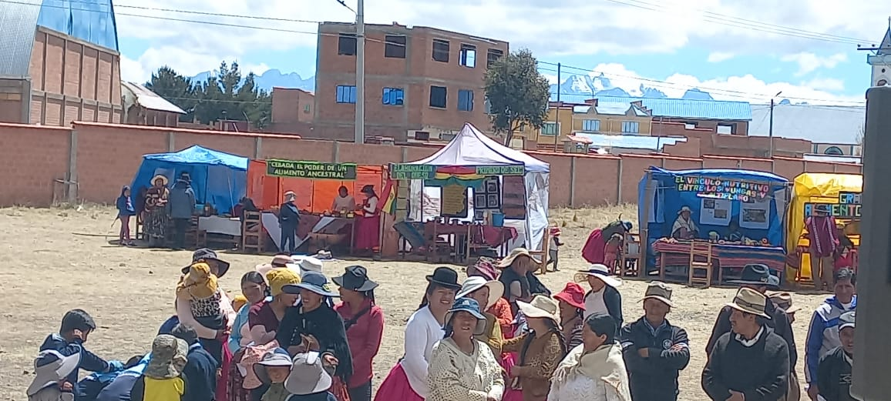

Actividades Educativas — Gestión 2025
Inauguración del Año Escolar
Fecha: El 3 de febrero de 2025 se llevó a cabo la inauguración del año escolar.
La inauguración marcó el inicio de un nuevo año lleno de desafíos y aprendizajes. Autoridades, docentes y estudiantes participaron con entusiasmo para dar la bienvenida a la gestión escolar. .

12 de abril - Día del Niño
Fecha: 12 de abril de 2025
Una jornada especial dedicada a nuestros estudiantes más pequeños, llena de juegos, alegría y actividades que celebran la infancia y los derechos de los niños y niñas.
27 de mayo - Día de la Madre
Fecha: 27 de mayo de 2025
Con mucho cariño se realizó un acto cívico y artístico para rendir homenaje a todas las madres de nuestra comunidad educativa, reconociendo su amor y esfuerzo.

6 de junio - Día del Maestro
Fecha: 6 de junio de 2025
Los estudiantes rindieron homenaje a sus docentes con actuaciones, mensajes y reconocimientos, agradeciendo su dedicación y esfuerzo diario en la formación de futuras generaciones.

14 de junio - Toma de Nombre de Promoción
Fecha: 14 de junio de 2025
La promoción del año recibió oficialmente su nombre en una emotiva ceremonia, reafirmando su compromiso con los valores educativos y celebrando su avance hacia una nueva etapa académica.

1 de Agosto — Velada Nocturna
Fecha: 1 de agosto de 2025
La tradicional velada nocturna se llevó a cabo con presentaciones artísticas, música y baile, donde los estudiantes demostraron su talento y amor por la patria.
2 de Agosto — Desfile Cívico
Fecha: 2 de agosto de 2025
El desfile cívico conmemoró el Día de la Revolución Agraria, Productiva y Comunitaria, con la participación de docentes, estudiantes y autoridades locales en un acto lleno de civismo y orgullo boliviano.

20 de agosto — Aniversario de colegio
Fecha: 20 de agosto de 2025
En conmemoración al aniversario institucional se realizaron diversas actividades deportivas y culturales, como atletismo, presentaciones artísticas y actos cívicos.

21 de septiembre — dia del estudiante
Fecha: 21 de septiembre de 2025
En esta fecha especial, los docentes festejaron a los estudiantes con un acto cívico lleno de alegría y reconocimiento. Hubo presentaciones, palabras de homenaje y actividades que destacaron la dedicación, el esfuerzo y el compromiso de cada estudiante dentro de la Unidad Educativa Técnico Humanístico “Andino”.
26 de septiembre - Feria a la inversa
Fecha: 26 de septiembre de 2025
En la Feria Inversa, los padres de familia se convirtieron en los protagonistas, compartiendo sus conocimientos sobre culturas, tradiciones y alimentación saludable. Una actividad que fortalece los lazos entre escuela, familia y comunidad.

23 de octubre — concurso de banda
Fecha: 23 de octubre de 2025
En el Concurso de Banda, los estudiantes destacaron por su disciplina, coordinación y amor por la música. Con orgullo representaron a la institución mostrando su talento y espíritu de unidad, fortaleciendo la identidad y el orgullo andino de nuestra unidad educativa.